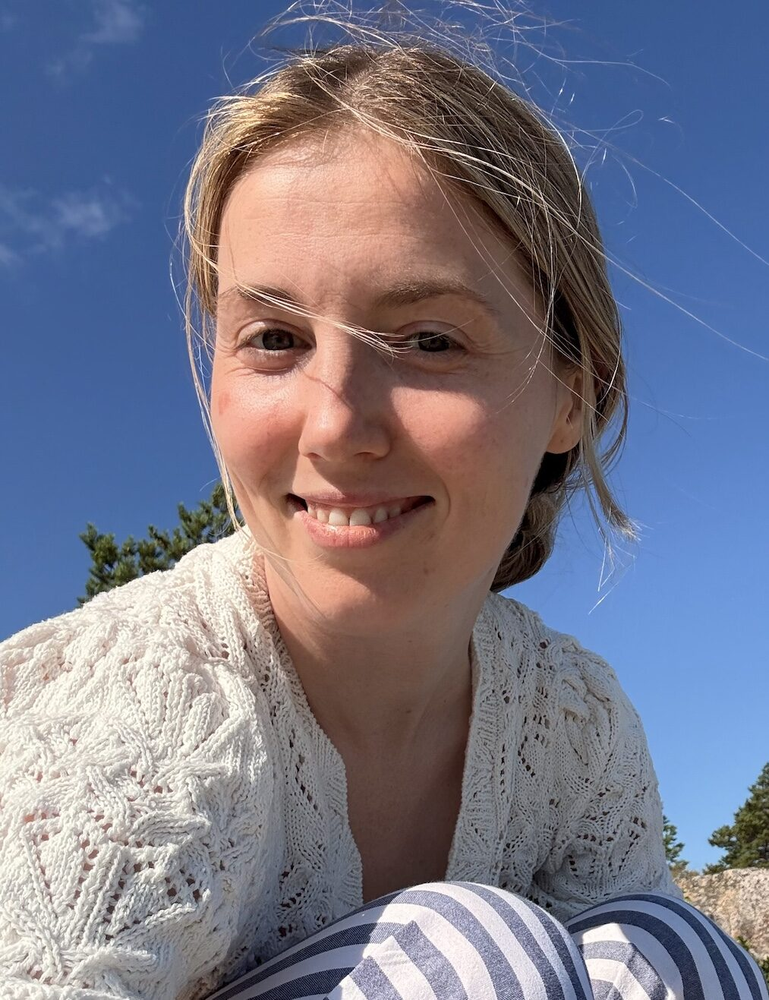

Psykologi · Helsinki
Psychologist · Helsinki
Psykolog · Helsingfors
Psykologi & Terveyspsykologian erikoispsykologi
Psychologist & Health Psychology Specialist
Psykolog & Specialpsykolog i hälsopsykologi
Psykologian maisteri, terveyspsykologian erikoispsykologi, työterveyspsykologi ja seksuaalineuvoja. Parhaillaan kouluttaudun psykoterapeutiksi.
Master of Psychology, specialist in health psychology, occupational health psychologist and sex counsellor. Currently training to become a psychotherapist.
Magister i psykologi, specialist i hälsopsykologi, företagshälsovårdspsykolog och sexualrådgivare. Studerar för tillfället till psykoterapeut.
Varaa aika Book a session Boka tid
Ihmisenä ja psykologina
As a person and a psychologist
Som människa och psykolog
Haluan olla läsnä omana itsenäni ja ammatti-ihmisenä, aitona ja tuntevana. Olen asiakkaitteni ja potilaitteni puolella, yhdessä heidän kanssaan pohtimassa ja kestämässä elämään kuuluvia hankalia, tuskallisia ja ihmeellisiä kysymyksiä.
I want to be present as myself — both as a professional and as a human being, genuine and feeling. I am on the side of my clients and patients, reflecting together on the difficult, painful and wonderful questions that belong to life.
Jag vill vara närvarande som mig själv — både som professionell och som människa, äkta och kännande. Jag är på mina klienters och patienters sida och reflekterar tillsammans med dem över livets svåra, smärtsamma och underbara frågor.
Keskeistä työskentelyssä on turvallisuus ja läpinäkyvyys. Tärkeimpänä pyrkimyksenäni on tavoittaa jokaisen ainutlaatuinen kokemus ja tukea kokonaiseksi kasvamista.
Central to my work are safety and transparency. My primary aim is to reach each person's unique experience and support their growth into wholeness.
Kärnan i mitt arbete är trygghet och transparens. Mitt främsta mål är att nå varje persons unika upplevelse och stödja deras tillväxt mot helhet.
Palvelut
Services
Tjänster
Yksilöllinen konsultaatio elämän haastavissa tilanteissa. Tarjoan tilaa pohtia ja ymmärtää omia ajatuksia, tunteita ja käyttäytymistä.
Individual consultation for life's challenging situations. I offer space to reflect on and understand your own thoughts, feelings and behaviour.
Individuell konsultation för livets utmaningar. Jag erbjuder utrymme att reflektera och förstå dina egna tankar, känslor och beteenden.
60 min 60 min 60 minSairastumiseen, kroonisiin sairauksiin ja elämänlaatuun liittyvä psykologinen tuki. Erikoisalani on sairastumisen ja kuoleman käsittely.
Psychological support related to illness, chronic conditions and quality of life. My speciality is processing illness and mortality.
Psykologiskt stöd relaterat till sjukdom, kroniska tillstånd och livskvalitet. Min specialitet är att bearbeta sjukdom och dödlighet.
Erikoisala Speciality SpecialitetLuottamuksellinen ja arvostava tila seksuaalisuuteen liittyvien kysymysten käsittelyyn ilman tuomitsemista.
A confidential and respectful space to address questions related to sexuality without judgement.
Ett konfidentiellt och respektfullt utrymme för att ta upp frågor om sexualitet utan fördomar.
Luottamuksellinen Confidential KonfidentielltTyön ja hyvinvoinnin psykologinen tuki. Burnoutin ehkäisy, palautuminen ja työkyvyn ylläpitäminen.
Psychological support for work and well-being. Burnout prevention, recovery and maintaining work ability.
Psykologiskt stöd för arbete och välmående. Förebyggande av utbrändhet, återhämtning och bibehållande av arbetsförmåga.
Yrityksille & yksilöille For companies & individuals För företag & individerAsiantuntijaluennot psykologian, terveyden ja hyvinvoinnin aiheista organisaatioille ja tapahtumiin.
Expert lectures on psychology, health and well-being topics for organisations and events.
Expertföreläsningar om psykologi, hälsa och välmående för organisationer och evenemang.
Organisaatioille For organisations För organisationerPsykologiset lausunnot ja arvioinnit terveydenhuollon, vakuutusyhtiöiden ja muiden tahojen tarpeisiin.
Psychological statements and assessments for healthcare, insurance companies and other bodies.
Psykologiska utlåtanden och bedömningar för hälso- och sjukvård, försäkringsbolag och andra organisationer.
Sopimuksen mukaan By arrangement Enligt överenskommelseAjanvaraus
Book a session
Boka tid
Voit varata ajan suoraan kalenterista. Valitse sinulle sopiva päivä ja aika, täytä yhteystietosi ja lähetä varaus.
You can book directly from the calendar. Choose a date and time that suits you, fill in your contact details and submit your booking.
Du kan boka direkt från kalendern. Välj ett datum och en tid som passar dig, fyll i dina kontaktuppgifter och skicka bokningen.
Vastaan yhteydenottoihin yleensä saman päivän tai seuraavan arkipäivän aikana. Ensimmäinen tapaaminen on aina maksullinen konsultaatio.
I usually respond to enquiries the same day or the next business day. The first appointment is always a paid consultation.
Jag svarar vanligtvis på förfrågningar samma dag eller nästa arbetsdag. Det första mötet är alltid en betald konsultation.
Jos kalenteri ei näy, voit varata ajan suoraan:
If the calendar does not load, book directly:
Om kalendern inte visas, boka direkt:
Varaa aika → Book appointment → Boka tid →Julkaisut & mediassa
Publications & media
Publikationer & media
Otteita julkaisuista ja asiantuntijapuheenvuoroista
Selected publications and expert contributions
Urval av publikationer och expertbidrag
Koskinen, M. (2025). Teoksessa T. Saarto, J. Lehto, E. Jämsen & R. Pöyhiä (toim.), Palliatiivinen hoito (s. 318–322). Duodecim.
Koskinen, M. (2025). In T. Saarto, J. Lehto, E. Jämsen & R. Pöyhiä (Eds.), Palliatiivinen hoito (pp. 318–322). Duodecim.
Koskinen, M. (2025). I T. Saarto, J. Lehto, E. Jämsen & R. Pöyhiä (red.), Palliatiivinen hoito (s. 318–322). Duodecim.